Galeria - TátilQuiz
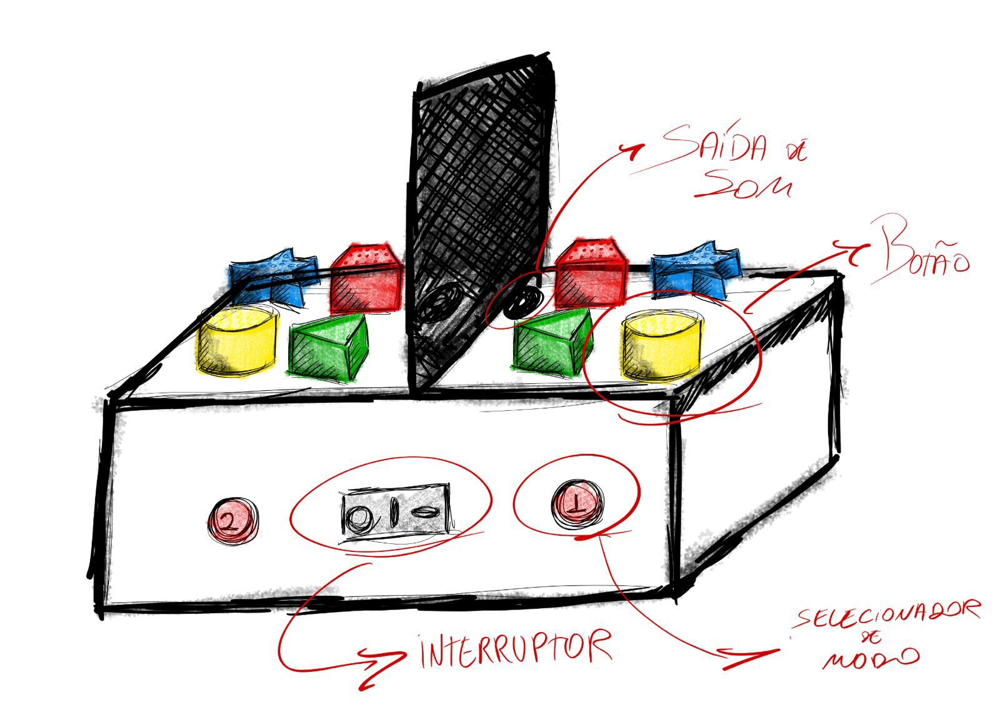
ideia inicial da estrutura do jogo, inicialmente pensado para 2 jogadores.
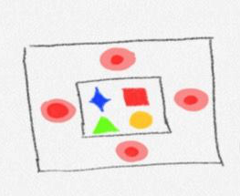
Ideia final da estrutura do jogo, agora jogado de 1 - 4 jogadores.
❮
❯

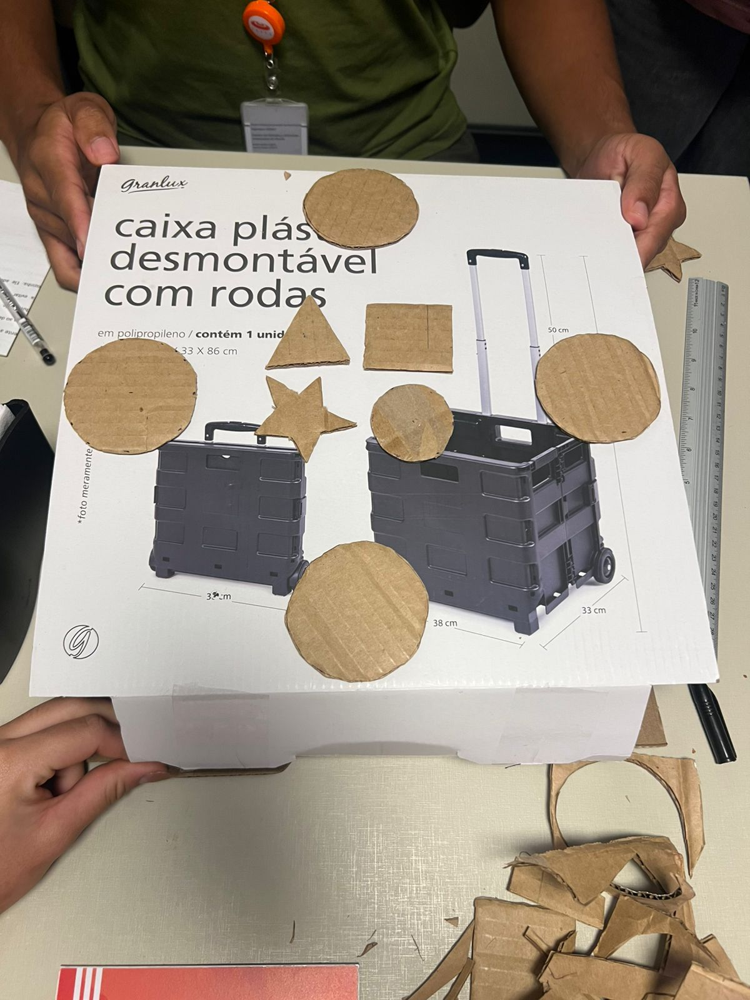
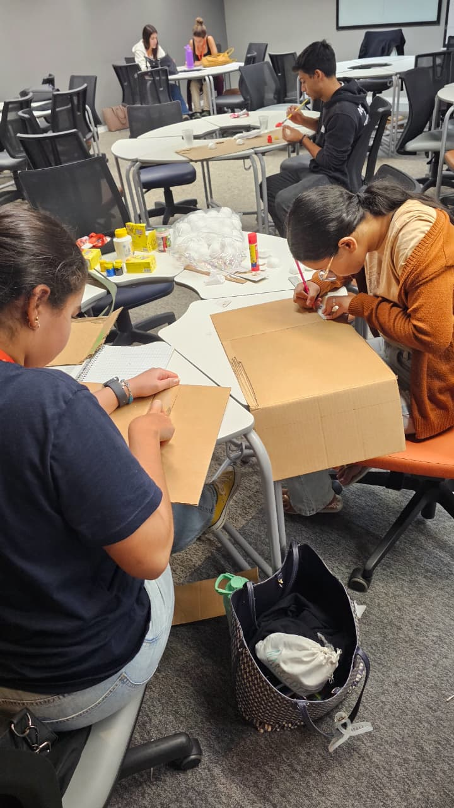
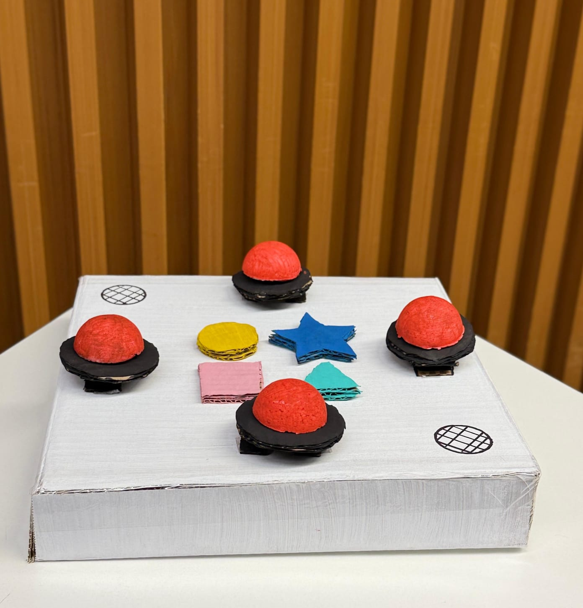
Fase de construção do protótipo não funcional.
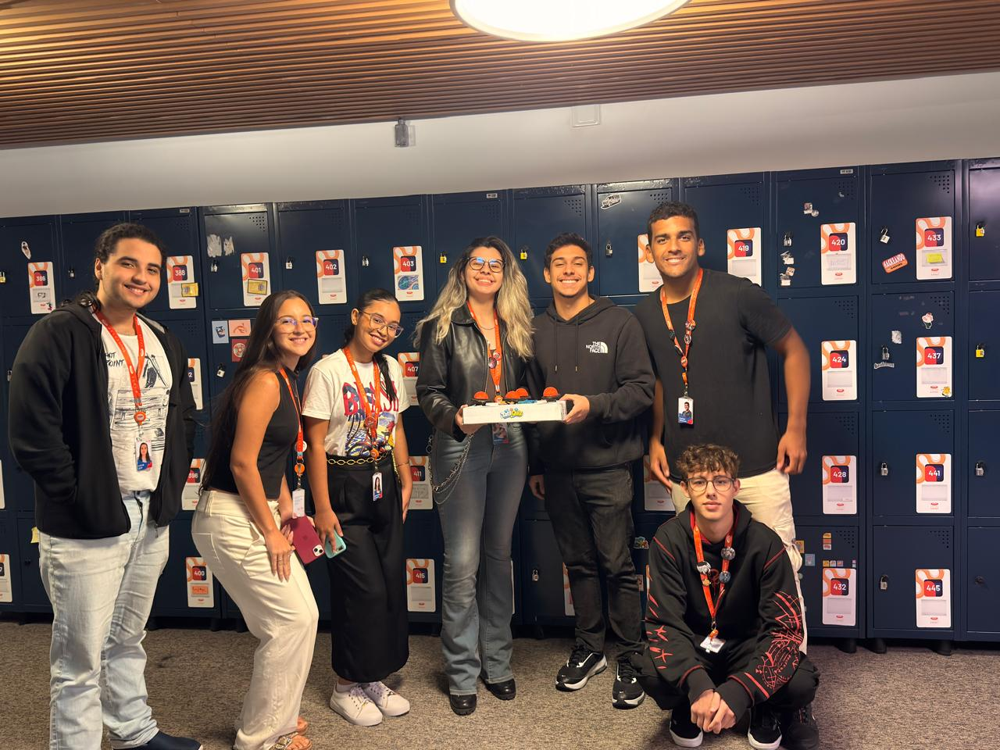
apresentação do SR1 (Status Report 1) na CESAR School
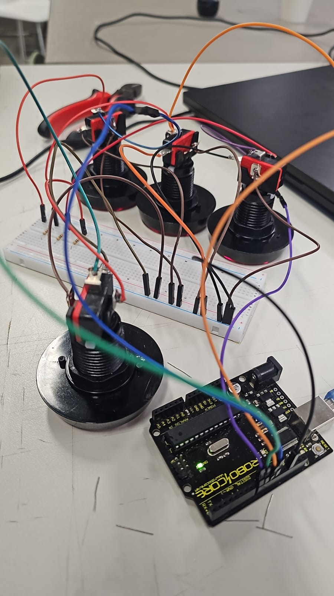
Inicio da montagem do circuito lógico e código C++
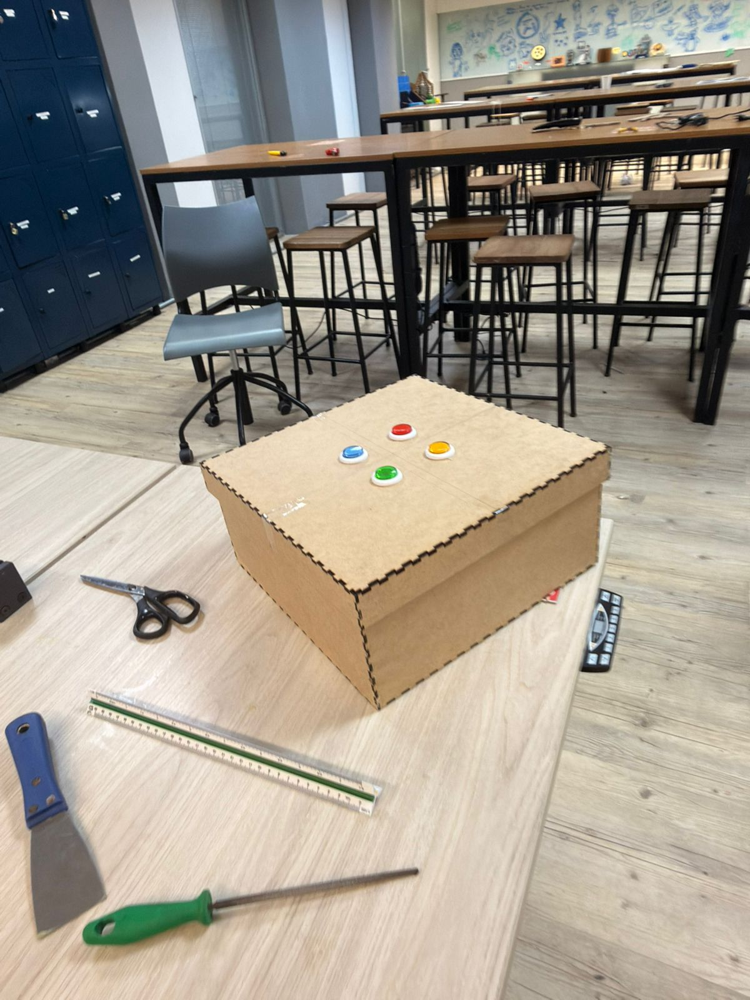
Inicio da construção do artefato final
❮
❯
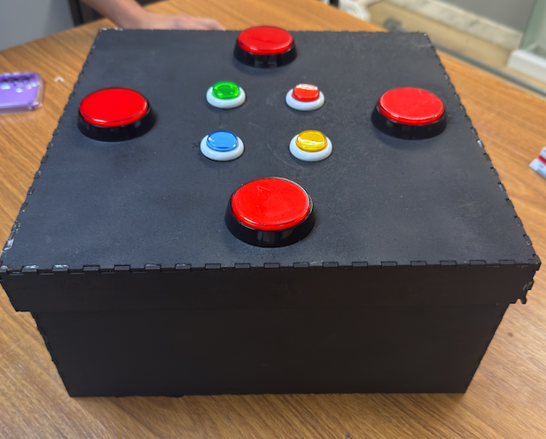
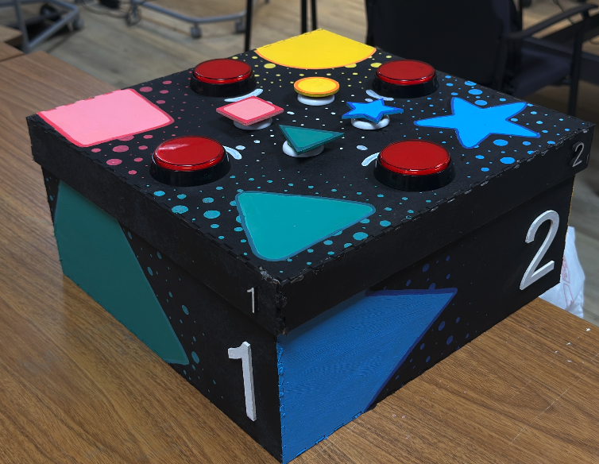
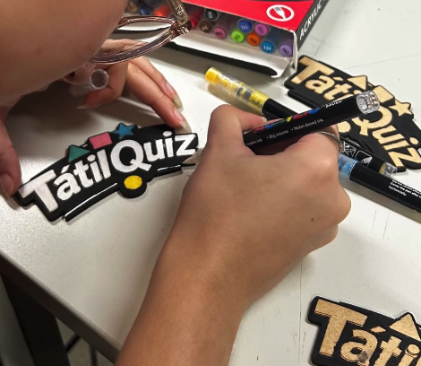
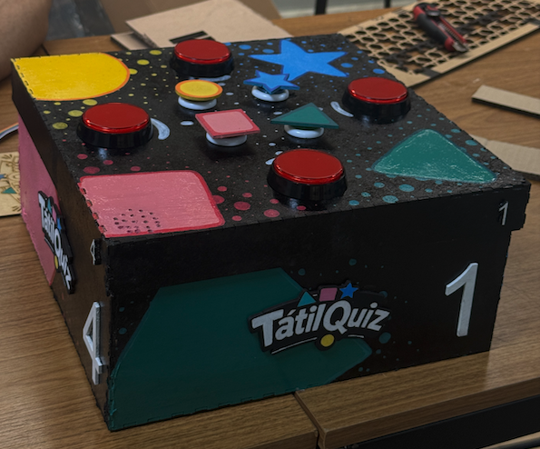
Fase de customização e layout físico do jogo!